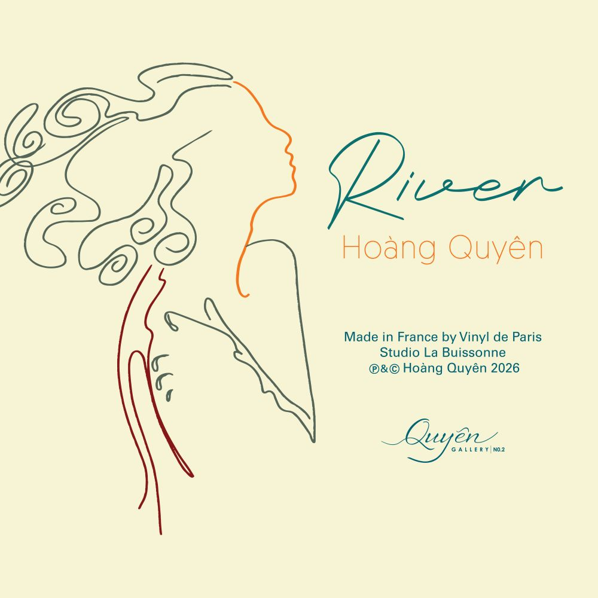
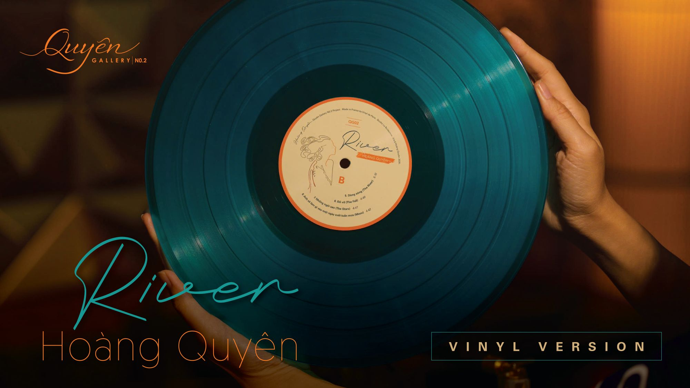
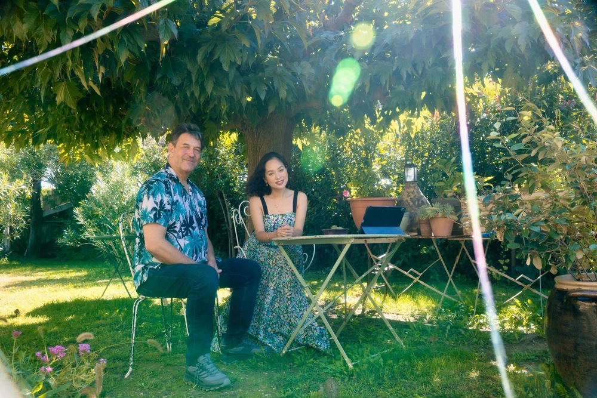

ViewAlbum

THE NEW SINGLE - OUT NOW
Hoàng Quyên chính thức phát hành album “River” gồm 8 sáng tác mới thuộc dự án âm nhạc Quyên Gallery No.2.
Album “River” như dòng chảy di sản trường tồn về văn hóa tinh thần, được người nghệ sỹ chuyên chở cả quá trình và chưng cất ở những thời khắc đẹp nhất. “River” được thu âm analog tại phòng thu La Buissonne, sản xuất chất lượng hi-end tại Pháp với sự tham gia của đội ngũ nghệ sỹ, nhạc công đến từ Châu Âu. Album được phát hành dưới dạng đĩa than (LP) song song định dạng digital trên các nền tảng nhạc số từ ngày 11.03.2026
Các Album Nổi Bật Trong Sự Nghiệp Âm Nhạc Của Hoàng Quyên.
Chuyên mục tổng hợp các tin tức về Hoàng Quyên
Ngày 10/3, ca sĩ Hoàng Quyên đem đến bất ngờ cho người yêu nhạc khi ra mắt album “River” tại Hà Nội.
Đọc Tin
Ba năm sau khi đánh dấu bước ngoặt với album “A Diary of Melody”, Hoàng Quyên tiếp tục ra mắt dự án mới.
Đọc TinSau thành công vang dội của dự án “Quyên Gallery”, nữ ca sĩ vừa tạo nên một cơn địa chấn nhỏ trong giới mộ điệu.
Đọc Tin